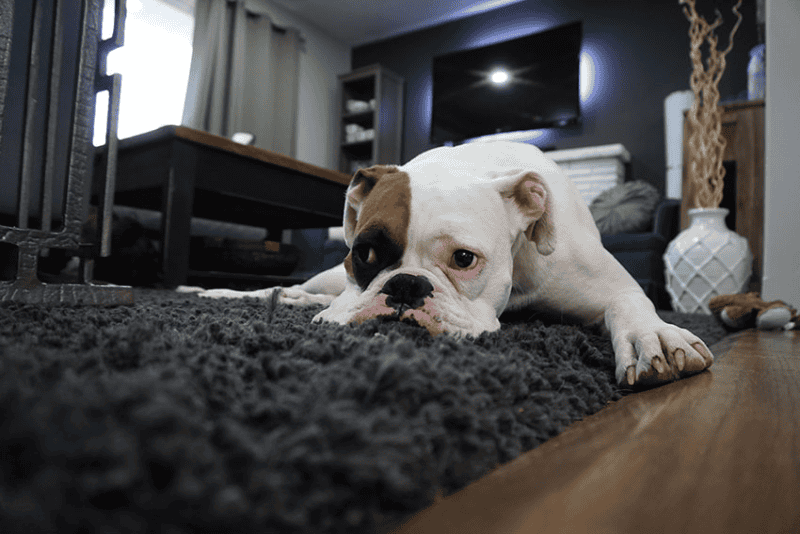

En qué país de Europa pueden multarte con hasta 200 mil euros por dejar al perro solo en casa
En ese país la nueva Ley de Bienestar Animal establece límites estrictos para evitar la negligencia: las mascotas no pueden permanecer sin supervisión por más de 24 horas y las sanciones por incumplimiento varían según la gravedad del caso
.png)
Tener un perro es una responsabilidad que va mucho más allá de llenar el plato de comida o dar una vuelta a la manzana. En algunos lugares del mundo, el compromiso es tal que existen límites legales estrictos sobre el tiempo que un animal puede permanecer sin supervisión humana . Por ejemplo, en España , la Ley de Bienestar Animal establece pautas rígidas para asegurar que las mascotas no sufran situaciones de abandono o desprotección
La normativa española es clara: ninguna mascota puede quedar sola por más de tres días seguidos. Pero para los perros, el margen es todavía más ajustado, ya que el plazo máximo permitido es de más de 24 horas.
El objetivo de esta medida es combatir el estrés, la negligencia y el maltrato.

Los fundamentos de la ley sostienen que un perro requiere atención constante, vigilancia y vínculo humano para tener una vida digna . Además, se prohíbe terminantemente dejar a los animales en lugares como balcones, terrazas, baúles de autos o sótanos, incluso por ratos breves.
El sistema legal español categoriza las faltas en tres niveles, con castigos económicos que buscan ser ejemplificadores para los dueños irresponsables:
- Leves: con multas que oscilan entre los 500 y 10.000 euros.
- Graves: las penalizaciones van de los 10.000 a 50.000.
- Muy graves: en casos extremos, las sanciones pueden alcanzar los 200.000 euros.
Si se comprueba que hubo riesgo para la salud del animal o una falta grave de cuidados esenciales al superar las 24 horas de soledad, el propietario se enfrenta a un proceso legal que se encuadra como una infracción sancionable bajo esta nueva estructura de protección animal.